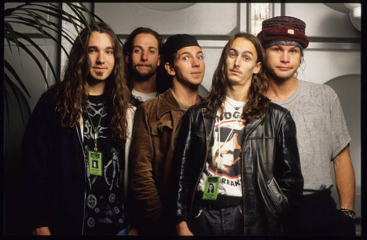

Nel marzo 1991 i Pearl Jam entrarono nei London Bridge Studios di Seattle per registrare il loro album di debutto Ten. A questo periodo risale la realizzazione della colonna sonora del film di Cameron Crowe, Singles - L'amore è un gioco, con le canzoni State of Love and Trust e Breath. I Pearl Jam partecipano alle riprese di tale film, interpretando la band Citizen Dick. Poco più tardi, il 25 maggio 1991, Dave Krusen lasciò il gruppo, sostituito da Matt Chamberlain, che aveva precedentemente suonato con Edie Brickell & New Bohemians.

Dopo alcuni concerti e la registrazione del video del singolo Alive, anche Chamberlain lasciò il gruppo per andare a suonare nella band del Saturday Night Live. Lo stesso Chamberlain suggerì come suo sostituto Dave Abbruzzese, che entrò nel gruppo durante il tour promozionale di Ten. I Pearl Jam a Oakland, 2013 Il 27 agosto 1991 fu pubblicato Ten, album di undici canzoni riguardanti argomenti oscuri come la depressione, il suicidio, l'omicidio e la solitudine. L'album raggiunse la seconda posizione nella classifica di Billboard e ottenne un disco d'oro. Da Ten furono estratti i singoli Even Flow, Jeremy, Alive e Oceans. L'album rimase in classifica per oltre due anni, divenendo uno degli album più venduti nella storia del rock e ottenendo dodici dischi di platino.